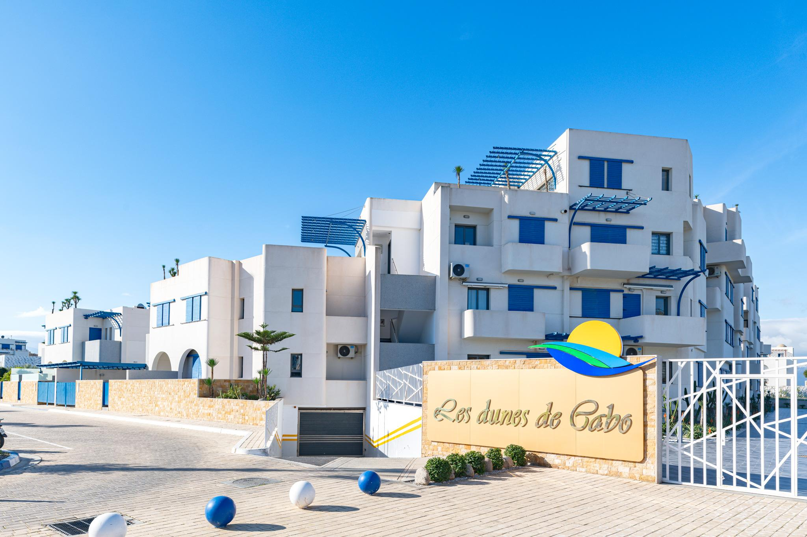

RÉALISATIONS / HABITAT COLLECTIF
Les dunes de Cabo Negro
Cabo Negro · Maroc

Le projet
Une réalisation résidentielle à Cabo Negro, présentée dans le portfolio STRUGAL avec des portes Aludoors et le système S70P.
- Crédit indiqué au portfolio
- Mountasser El Mouaffak
- Systèmes mis en œuvre
- Portes Aludoors · S70P
- Localisation
- Cabo Negro · Maroc
Informations issues de la documentation STRUGAL. Consulter la source officielle (nouvel onglet)